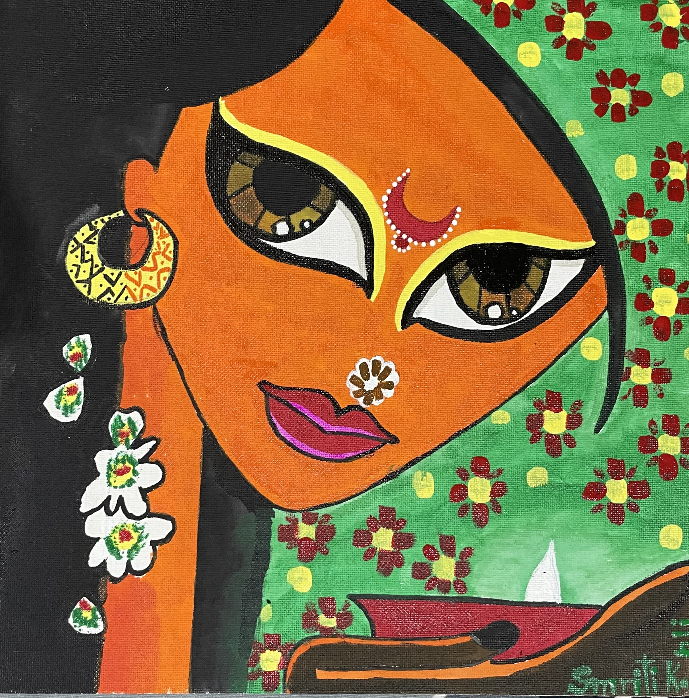
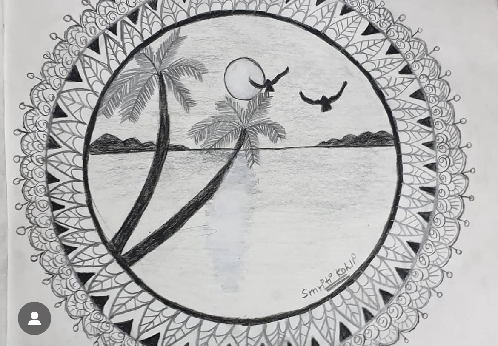
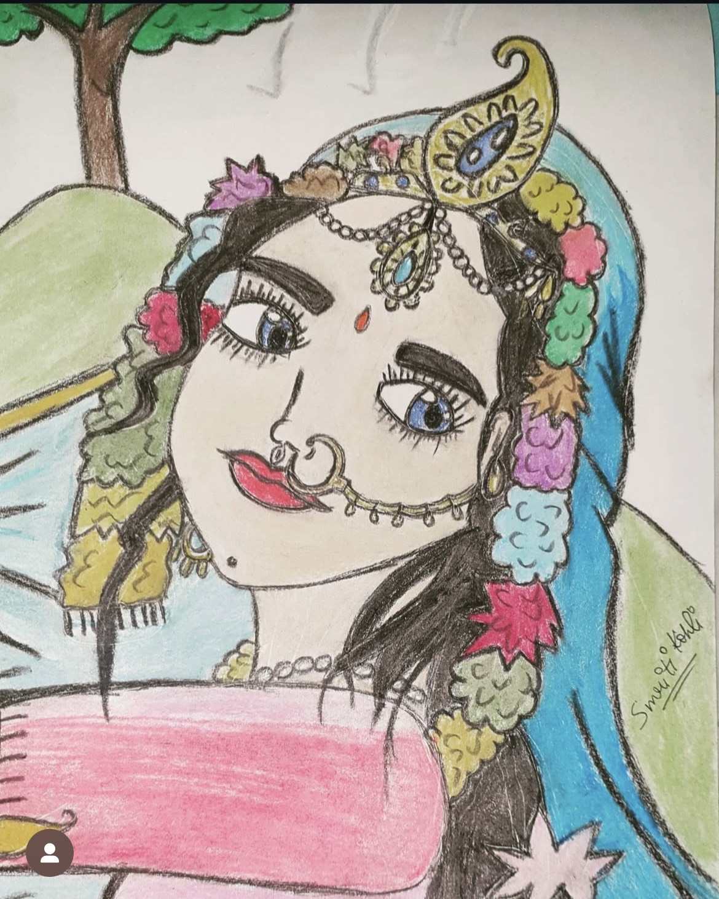
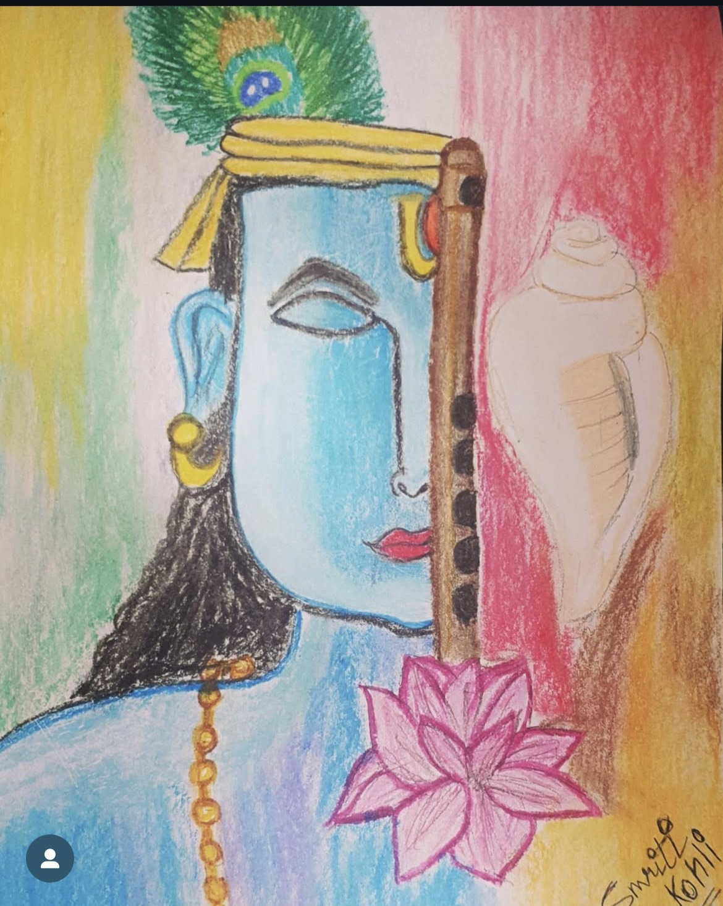
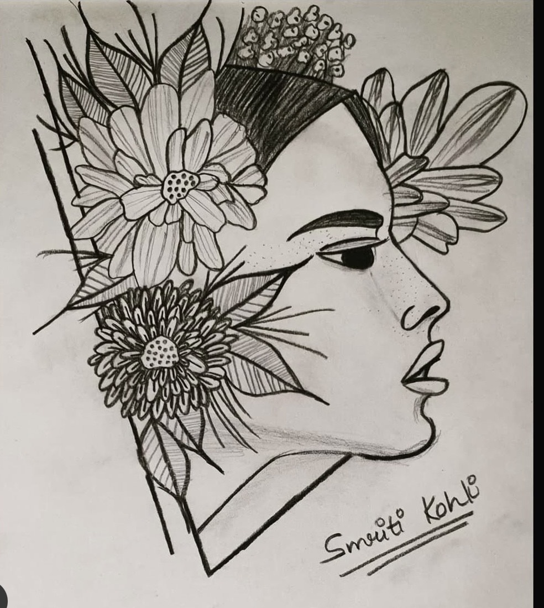
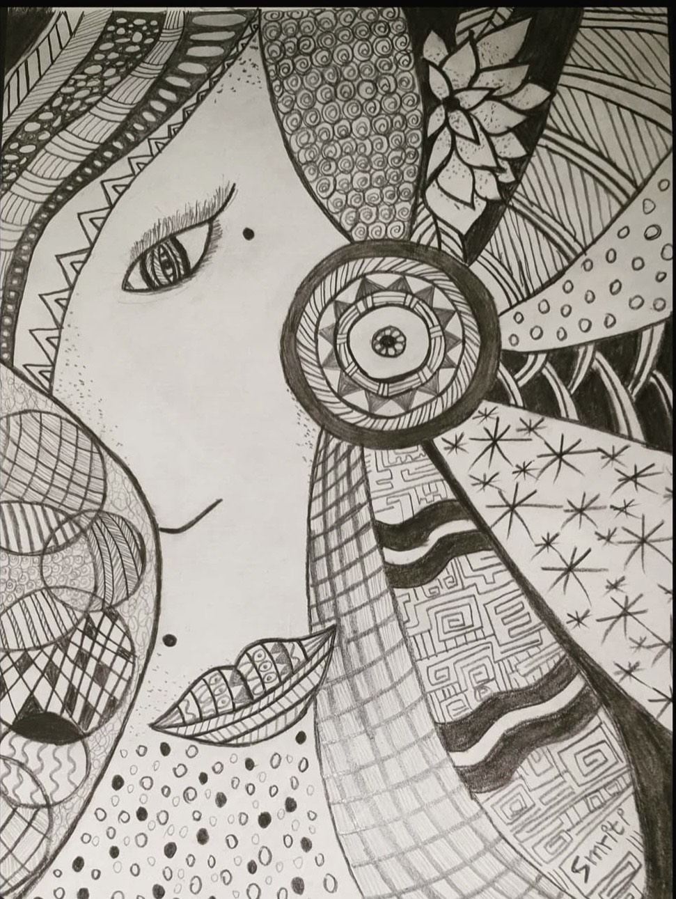
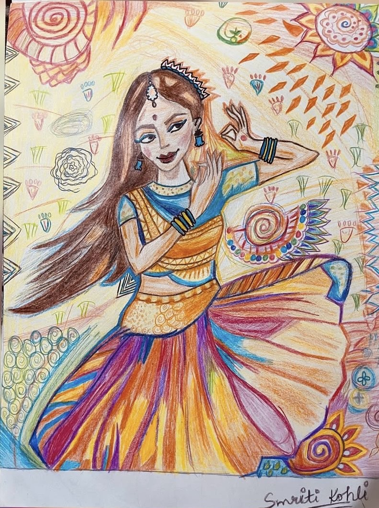

A collection of my hand-painted artwork
This painting captures the serene elegance of an Indian woman gently holding a diya, the warm flame softly illuminating her features. Her sharp, expressive eyes speak volumes of inner strength and cultural pride. The tilak on her forehead symbolizes tradition and spirituality, while the diya signifies light, hope, and devotion. The composition blends vibrant cultural symbolism with delicate portraiture, celebrating the timeless beauty and soulful depth of Indian womanhood.
This intricate mandala sketch frames a peaceful coastal scene within a harmonious circular design. Two graceful coconut trees sway gently over calm waters, while birds glide freely in the open sky. The flowing lines of the mandala surround the landscape like a rhythmic breath, symbolizing balance, nature, and the eternal cycle of life. This piece invites the viewer to pause, reflect, and find tranquility in simplicity.
This captivating oil pastel painting brings to life the divine beauty of Goddess Radha Rani Ji. Her eyes, sharp yet tender, seem to look straight into the soul—radiating both love and strength. Adorned with exquisite jewelry, each detail of her earrings, nose ring, and intricate chandrika gracing her forehead is rendered with delicate care, embodying her celestial charm. The soft textures of the pastels glow with devotion, making this artwork not just a painting, but a spiritual experience.
This mesmerizing oil pastel painting portrays the half face of Lord Shri Krishan, immersed in divine serenity. The other half of his visage is gently veiled by a delicate bansuri (flute) and a blooming lotus, symbolizing love, purity, and spiritual awakening. A shankh (conch shell) rests nearby, signifying the sacred sound of the cosmos. His closed eyes reflect inner peace and meditation, while the elegant peacock feather on his forehead shines with vibrant grace—an eternal emblem of his playful divinity and wisdom. This artwork echoes calmness, devotion, and the poetic beauty of Krishan’s eternal presence.
This captivating sketch features a woman emerging gracefully from blooming flowers, symbolizing strength, rebirth, and unapologetic femininity. Each petal seems to unfold her essence—bold, fearless, and rooted in nature. Her presence radiates power, as if she’s breaking free from constraints, blossoming into her truest self. The fusion of delicate florals with the poised figure creates a stunning contrast, celebrating the raw beauty of inner confidence and transformation.
This stunning circle mandala sketch reveals the half face of a mysterious woman, where one expressive eye and graceful lips are gently framed by intricate mandala patterns. A tiny mole adorns her face, adding character and allure to her partial gaze. The surrounding mandala flows with diverse patterns, symbolizing the complexity of thoughts, beauty, and inner strength. This artwork is a beautiful blend of sacred geometry and feminine elegance, inviting viewers to lose themselves in her silent story told through curves and lines.
This vibrant pencil color artwork captures the essence of a traditional Indian dancer lost in the rhythm of her graceful moves. Dressed in a richly detailed lehenga, the intricate patterns on her attire and the colorful background enhance the dynamism of her performance. The sharp movements, brought to life with an explosion of colors, reflect the beauty of Indian classical dance. Every line and stroke in the piece highlights the precision and energy of the dancer, while the detailed background adds depth and rhythm to the overall composition, creating a mesmerizing visual experience.
